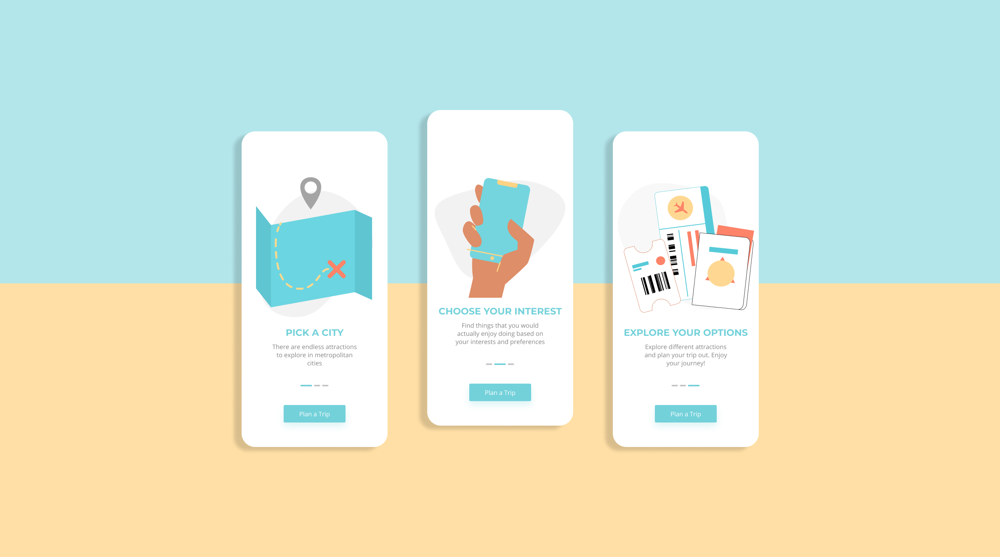
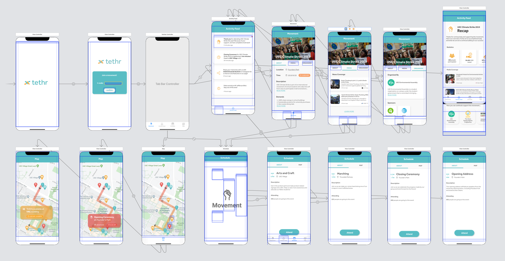
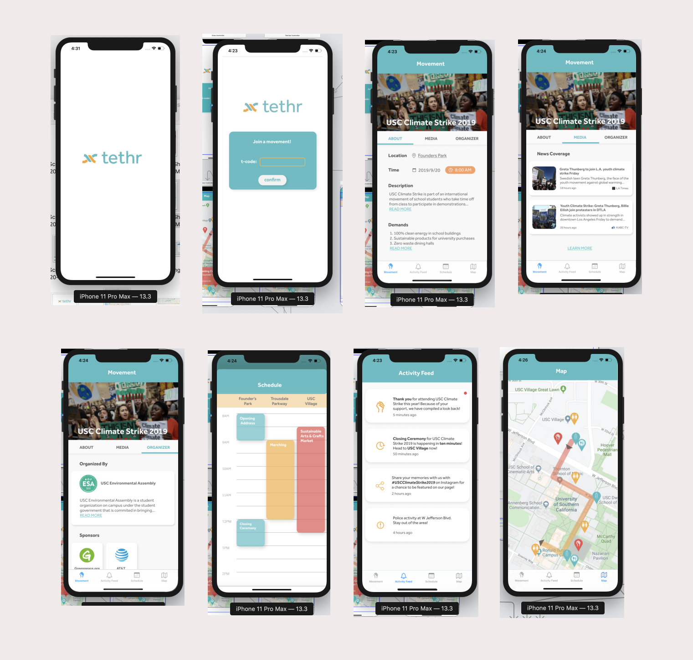

See my work
I've worked on several projects including UI/UX app design, tech startup, software development.
Context: During my fall of my freshman year, I was in a a course named BAEP 465: Digital Playbook for Entrepreneurs:
Creating a Tech Startup. The course was meant for seniors who wanted to summarize what they learned over the four years
and build a technology startup company. However, I wanted to challenge myself and decided to take the course anyways. As a result,
I developed a high-tech start-up and build the components that make up a digital playbook.
My Role: Founder and CEO
Team: I worked in a team of four.
Problem:
- It is time consuming to search for activities for your travel itinerary.
Planning your next adventure requires hours ofresearch to find the information you're looking for
- There's decentralized information; Travel recommendations are scattered across amultitude of platforms and websites
- Travel guides have lack of personalization. You have to sift through numerous recommendations to find what matches your travel needs
Solution: Explorify is a mobile platform that provides a seamless and personalized experience to
explore the world and discover the best it has to offer. Explorify brings together the recommendations of thousands of
travel enthusiasts in one central location. In addition, by combining user insights and data, travel is
personalized and customizable to fit user preferences.
My Journey:
Task: My task was to develop all the components of a high-tech startup.
This includes ideation, market and consumer research, UI/UX designs, creating a pitch deck, and writing a business plan.
Time Frame: Approximately 3 months
Ideation:
I came up with the idea of Explorify when I was traveling to Los Angeles for my freshman orientation.
I had a couple of extra days before my orientation to explore LA. However, before my trip,
I would spend countless hours googling and planning my itinerary for the trip. I wanted
the best experience but there was no simple centrazlied platform for personalized planning for my trip.
As a result, I decided to ideate a tinder/stich-fix style app. The main purpose of the app is
to curate recommendations for future adventure that are based on preferences, interests, & user insights to help
put together the perfect itinerary.
When I pitched this idea to my class before groups were formed, the people who liked my idea had a chance to vote for it in order to be on
my team. As a result, those who voted for my idea colloaborated with me to continue to develop my idea.
UI/UX designs
I took on the role to create the design composites. I had no previous experienced in design or prototyping.
As a result, I spent countless hours learning how UI/UX designs worked. For my UI/UX mobile app design, I used
the tool Figma for design and prototyping.
Onboarding pages:

Core features of Explorify:
Click here to view the Figma Design
Click here to view the Figma Prototype
Business Plan:
I must admit that I did now know what a business plan was before entering the course.
After asking questions and reading articles about a business plan, my team and I worked together
to write up the main components of a business plan:
- Technology Due Diligence
- Profit & Loss (P&L) Statement
- Marketing Plan
- Business Model
I focused on writing the Technology due Diligence because of my greatest strength was in Computer Science.
In addition, I worked on components of the business plan, such as the Executive Summary, SWOT analysis, Product Plan, and the Business Model.
Click here to view the our Digital Playbook
Pitch deck
The pitch deck was designed through Canva. We integrated out digital playbook into concised points into the presentation.
Note: our old prototype was used in the presentation due to time constraints.
Click here to view the our pitch deck
Result: Our group pitched the MVP Explorify to the class and the professor at the end. Explorify
taught me the step-by-step process in building a high-tech startup, from ideation to implementation.
Context: During my fall of my freshman year, I was in a club called LavaLab . LavaLab is USC’s
premier student-run startup incubator was made up of the school’s top 5% of developers, designers, and project managers.
My Role: Product Developer
Team: I worked in a team of four to ideate, design, and build a startup as one of seven teams. There was one project manager, product designer, and two product developers.
Problem: The lack of centralized communication in protests is a barrier to effective engagement.
Solution: Tethr is a mobile platform that streamlines communication between protest organizers and their participants.
Tethr aims to help participants stay engaged in the rally rather than being distracted by the chaos and noise that stems from a lack of transparency.
My Journey:
Task: My task was to develop the code and user interface.
In addition, I was responsible for ideating, researching the market and identifying core features.
Time Frame: Approximately 3 months
Core Features:
My team and I listed out all the features that Tethr needed to implement. After listing out
all the features, we divided them into two categories: the core features and additional features.
My role as a developer was critical at this stage because as a developer, I needed to recognize my own strengths and limitations
in my ability to implement the features. With only 3 months left and additonal time constraints, the other developer and I
decided to pick at most 3-4 core features to focus on and then utilize the remaining of the time to implement the additional features.
The core features ended up being:
- Allowing organizers to customize their Tethr instance by receiving a unique Tethr code to invite participants to engage with the protest’s curated platform.
- Having a movement page for participants to learn about the organization and protest (movement page). Participants will be able to receive critical updates
and experience the movements story through custom content developed by the organizers using pre-set templates (activity feed).
- Implementing the activity feed so participants are ensured that they stay updated on chants, safety warnings, and any other necessary information.
- Integrating a map and a schedule calendar to allow participants to to gather further information regarding event times and resource locations they will need to find.
Language:
My developer and I experienced an obstacle of deciding what coding language to choose from. After much research, we decided to use SwiftUI
to develop Tethr. SwiftUI framework leverages features of Apple's custom-created Swift language to make it easier and faster for developers to build
better user interface code with fewer errors while delivering more features. This was essential for us because it meant that there was less effort
spent on creating the routine interaction elements of apps, resulting in less code to debug and maintain

Implementation
Next, while our product designer was developing the wireframes and design composites, I self-learn SwiftUI as I was intially unfamiliar to it.
I practiced making smaller workloads, such as the onboarding screens.
As soon as our product designer finished design composites exports, it was time for my developer and I to implement the protoypes.
We sometimes coded next to each other to help one another out whenever we stumbled onto a problem.
Note: Due to our time constraints and as the deadline approached, we decided to hardcode our features.

Result: After finishing up the final implementation and development of Tethr, our group revealed our MVP on Lavalab's Demo Night.
Demo Night is when students from USC and investors view the showcasing of products from the LavaLab groups. All in all,
with the help of Tethr, protesters are now able to actively engage in the movements that they are passionate about.
Click here to visit the GitHub Repository Code
My name is Teresa Tran
I am currently a freshman at the University
of Southern California. I am studying
Computer Science and Buisness Admin.
I enjoy learning new skills and getting
together with ambitious people to solve
complex challenges. I hope to transform
my crazy ideas into innovation through
work and internship opportunities.
Things I Do and Love:
- Writing full-stack code
- Expanding my investment portfolio
- Developing UI/UX mobile designs
- Drinking lots of coffee and tea
- Solving puzzle games (My favorite is Sudoku!)
- Collaborating with other enthusiastic people
View My Resume
Have any questions or feedback? Feel free to send me a message! :-)